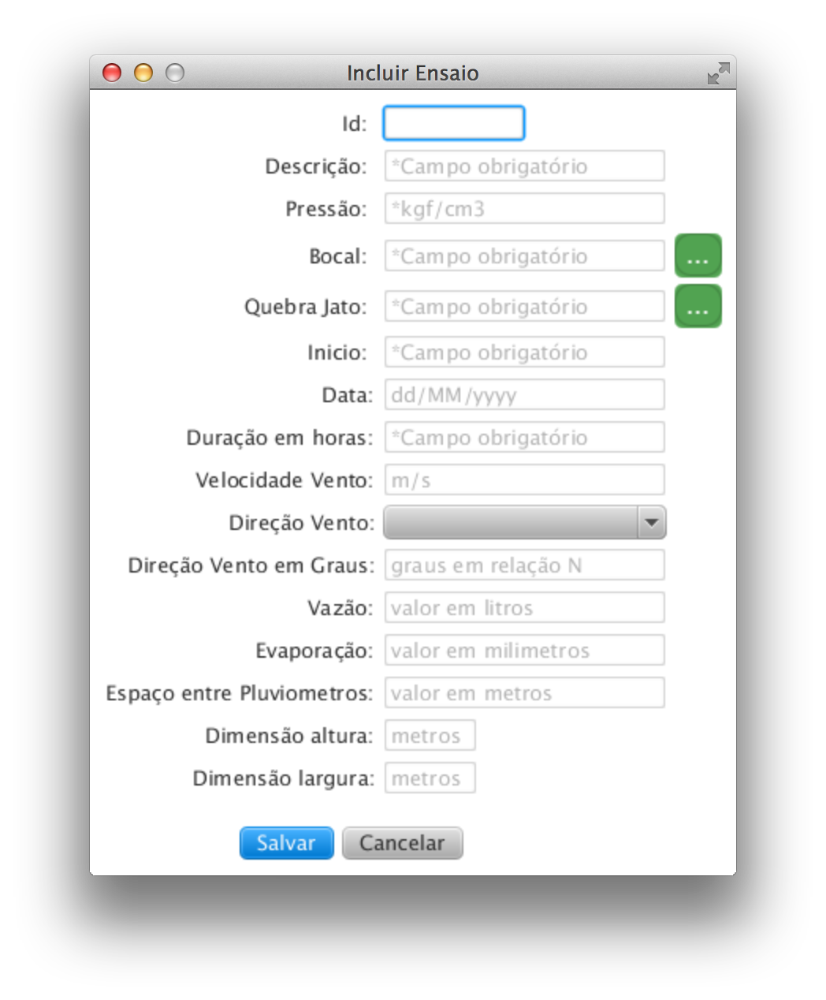

O cadastro de Ensaio é a representação de um experimento, tem por finalidade armazenar as informação referentes ao Ensaio; Encontra-se no menu Início >> Ensaio, possui outra alternativa de acesso via a listagem de ensaio botão ;
Tela responsável pelo cadastro de Ensaio:

Detalhamento dos campos:
Descrição: campo texto obrigatório, indica-se cadastrar uma descrição que identifique o ensaio. Campo utilizado posteriormete para a consulta;
Pressão: campo numérico, referente a pressão da água liberada para o aspersor central, unidade de medida indicada kilograma força por centímetro cúbico(kgf/cm3);
Bocal: selecionar o bocal utilizado no ensaio, no botão é possível visualizar a listagem dos bocais cadastrados. Dois cliques para selecionar; ver cadastro de bocal »
Quebra Jato: selecionar o quebra jato utilizado no ensaio, no botão é possível visualizar a listagem dos quebra jato cadastrados. Dois cliques para selecionar; ver cadastro de Quebra Jato »
Ínicio: campo texto referente a hora de início;
Data: campo de data referente a data de realização;
Duração em horas: campo texto, indica o tempo de duração
Velocidade do vento: campo númerico referente a velocidade média do vento registrada durante a duração do ensaio, unidade de medida utilizada metros por segundo (m/s);
Direção do vento: o campo direção do vento possui duas formas para inserção, a primeira é selecionando no combobox as direções padrões; a segunda é informando o valor numérico correspondente aos graus referente a norte. Após informar um dos campos é atualizado o outro de forma automática;
Vazão: campo numérico não obrigatório referente a vazão registrado no relógio de vazão de água, unidade de medida indicada Litros;
Espaço entre pluviometros: campo numérico referente ao espaçamento entre pluviometros, unidade de medida utilizada metros(m); **
Dimensão altura: campo numérico obrigatório referente a altura em metros da malha de pluviometros; **
Dimensão largura: campo numérico obrigatório referente a largura em metros da malha de pluviometros; **
** O campo após a inserção não pode ser editado, devido a sua utilização para a geração da malha de pluviometros (coletas).
Listagem de Ensaio
Após o cadastro de um ensaio é possível visualizar todos os ensaios a partir do menu Início >> Listagem de Ensaio;
Atualizar/Excluir um Ensaio: dois cliques em cima da linha do ensaio
No painel de filtros é possível parametrizar a listagem de acordo com a necessidade, os campos de filtro trabalham de forma conjunta sendo possível filtrar apenas por um dos campos, dois ou os tres campos.
Atualizando/Excluindo um Ensaio
Para atualizar um ensaio selecione-o na listagem e duplo clique, ele abrirá a tela abaixo, atualize as informações e acione o botão para armazenar as alterações.
Caso deseje excluir um ensaio, selecione na listagem e duplo clique, acione o botão . Ao excluir um ensaio será também excluido todas as coletas referentes ao mesmo, não sendo possível a recuperação dos dados.